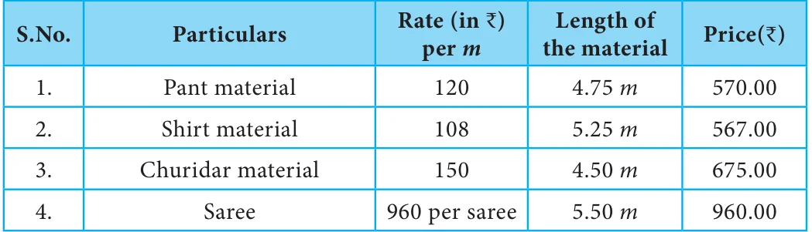
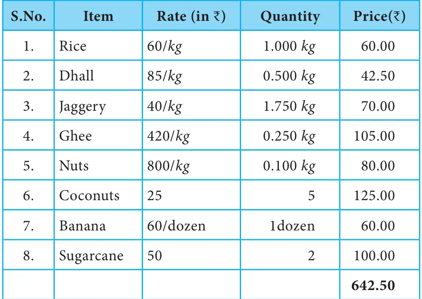
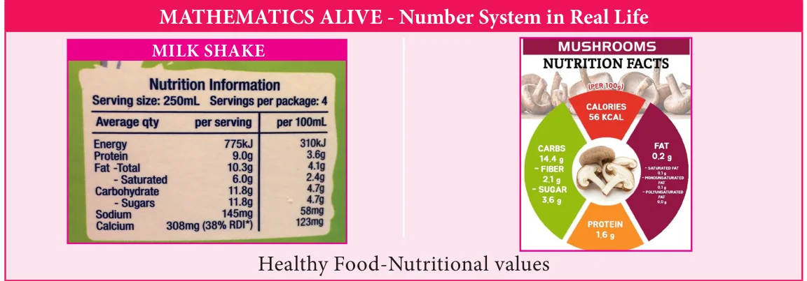

Consider the following situation. Ravi has planned to celebrate pongal festival in
his native place Kanthapuram. He has purchased dress materials and groceries for the celebration. The details are furnished below.
Bill-1 ABC Textiles

Bill-2 XYZ Groceries

What do you observe in the bills shown above? The prices are usually represented in decimals. But the quantities of length are represented in terms of metre and centimetre and that of weight are represented in terms of kilograms and grams. To express the quantities in terms of higher units, we use the concept of decimals.
